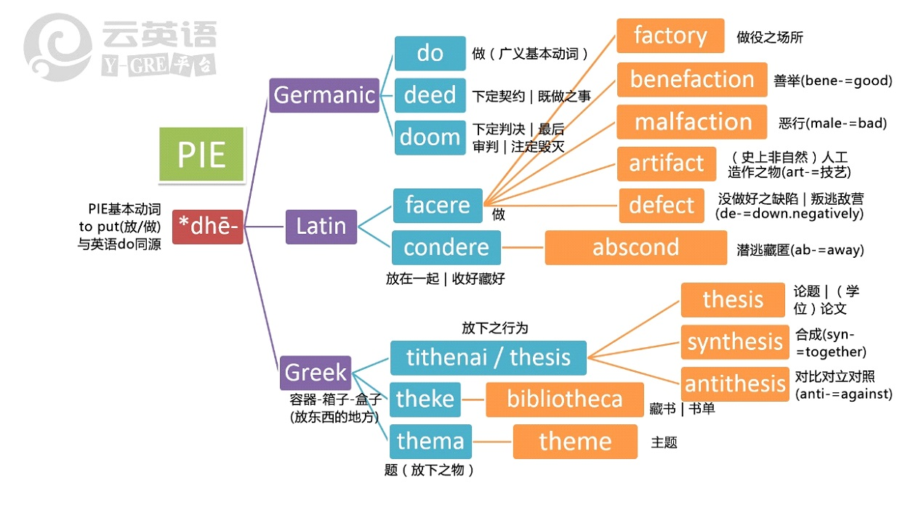
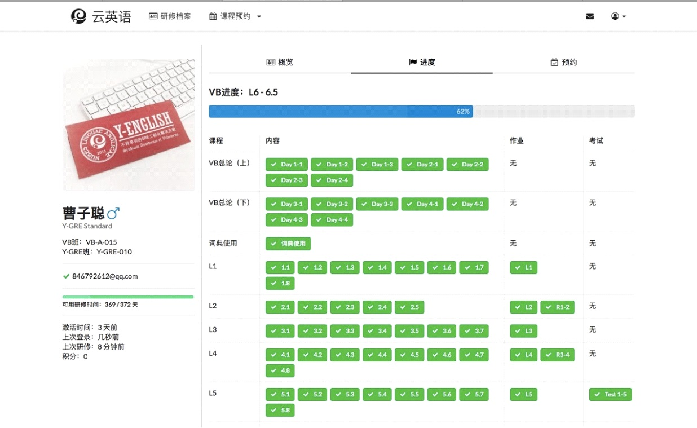

云英语
云英语：因学术而改变

"词汇建造师"（Vocabulary Builder, VB）系"云英语"推出的首个学术（技术）产品，在世界范围内首次以"历史比较语言学"、"原始印欧语"和"词源学"为驱动，建立革命性的全新的英文词汇和阅读教学体系，系统重订2万英文单词释义，以云语言数据库为基础进行技术实现；整合标准分段研修、普通进度作业、学术阅读作业、测验及反馈、微讲堂与主题讨论等成一反转式教学体系，使学习者能够在200小时内构建起超过20K的学术阅读词汇体系。既为未来的印欧语系多语种扩展提供接口，也兼引介西方文化和人文基础，弥补国内通识教育的不足。
学术背景
Rote Learning是儒教背景下常见的学习模式，学习实践、理论模型与实验数据均不支持其使用价值；对于渡过童年语言学习黄金期的成人，只能以未知与已知相关联的系统认知方式来不断扩展形成新的认知构建。
现在欧洲的大多数语言，包括英语、德语、法语、意大利语、西班牙语，以及古代的拉丁语、古希腊语，直至东方的波斯语和梵语，都属于同一家族，我们称之为印欧语系。他们同宗同源，共同的祖先是原始印欧语（PIE, Proto-Indo-European）。这里尤其要注意，构成英文词源主体的日耳曼、拉丁和希腊三者是同源的，这才为我们建立系统关联提供了根本便利。而建立系统性关联的工具就是历史比较语言学的方法。
从原始印欧语PIE演化成主要三支：日耳曼、拉丁、及希腊。这三支构成了当代英文词汇的90+%。因此除了应用语言学规律的直接对应识别并掌握生词，我们更可以基于同一个PIE词基（PIE root）来构建其下属衍生的全部英文词汇，形成一种接近词义本质的系统性词汇网状扩增。而且因为这种广度扩增是基于i+1关联理解认知规律，故而不存在机械硬背的遗忘问题，更规避了含义偏差问题。如此构建的词汇大厦坚如磐石，终身可用。
研修系统
云英语新一代研修预约系统于2017暑假正式上线，为大家带来更便捷高效的研修体验。云英语新系统包括iPad借阅管理及信息登记板块，在线报名注册管理板块，在线备考框架及全流程进度管理及分析反馈板块，分级查房及反馈记录管理板块，团报及积分系统板块，站内通知及邮件板块。
研修形式
VB词汇建造师研修采用翻转式学习模式，并基于产品模块化架构和研修预约系统（Y-System）实现了研修全流程的标准化，以视频学习+人工干预的方式进行。VB基准时长100h，全年滚动开放。累计超过2000+北清及周边高校师生从中受益。
视频学习：云英语设有自主研发的研修预约系统和非常人性化的视频制度，使用iPad作为观看介质。开放时间内，学生不仅可以随时提前预约机位，灵活安排学习时间，还可以通过研修预约系统（Y-System）的进度管理动态调整学习规划。
多元化研修体验：VB研修设有作业评改反馈（常规&学术阅读）+小组活动讨论+阶段性测验及反馈等环节。学术答疑团队负批改反馈作业并组织讨论交流活动（Lingoes/Mdict使用，i+1理论与系统关联，VB与多语种拓展…）。
人工干预：配合视频学习，基于研修预约系统（Y-System），云英语VB研修设有标准化的答疑干预体系和分级查房及反馈管理制度。学习者在研修过程中遇到疑难，可随时跟学术答疑团队交流获得针对性指导。学术答疑团队在研修全流程各节点检查学生掌握情况，结合分级查房制（班主任-答疑团队-督学组-总学术顾问）予以指导干预，并将每个学生的答疑反馈记录数据化随时调用。
面向人群：VB目前主要面向北大清华学生、校友和教师，也适当开放一定比例的名额预留给周边社区多元化背景的潜力研修者。申请研修者缴费注册后需经审批合格方可开始研修。
费用及团报优惠：VB的基准技术费用是7800元（校友社区）和8800元（多元化背景下的潜力研修者）。云社区基于社区定位，鼓励团报，相应算法如下。对于校友社区基准费用7800元，团报每多1人减免200元，上限5人，满5人团最低至6800元。对于周边社区基准费用8800元，团报每多1人减免400元，上限5人，满5人团最低至6800元。
VB与Y-GRE联合报名：基准费用是12800元（校友社区）和14800（周边社区）。相应的团报规则为，12800元对应算法是-400*n，满5人为10800元。14800对应算法是-800*n，满5人为10800元。
有效期：VB视频研修资格的基本有效期为半年。可一次性付费3000元延长VB有效期一年。有出国访学、参与课题或移居外地等情况，可申请挂起研修资格并延长有效期。对本科在校生，VB研修的有效期最长可免费延长至毕业前。
云英语保留对各项实施细节合理调整的权利，有进一步咨询可致电：400-876-3898?010-82863898。
版权所有 2011-2015 云英语 Y-English All Rights Reserved
地址：北京市海淀区五道口华清嘉园商务会馆802
电话：400-876-3898 010-82863898 82863899 传真：010-82863897